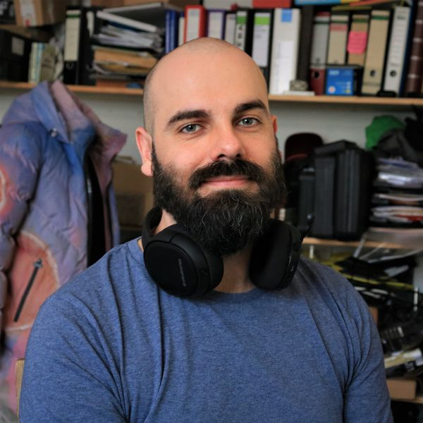

Industrial designer, car modeler and former nightclub owner, now computer science student.
Passionate coder and professional designer with logical thinking, great willingness to learn,
good communication skills and diverse work experience.

I am currently looking for a challenge as a working student in software development.
Relevant and enjoyable courses
| Semester | |
|---|---|
| Linear Algebra | 1 |
| Networks | 2 |
| Computer Architecture & Operating Systems | 1 |
| Theoretical computer science | 2 |
| Introduction to Computer Programming II | 2 |
.NET / C#Java with JavaFXTypeScript with nodeJSPythonIntelliJ, WebstormRiderEclipseVisual Studio and VSCode(c) Johannes Rave 2021 Get in contact